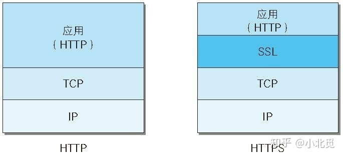
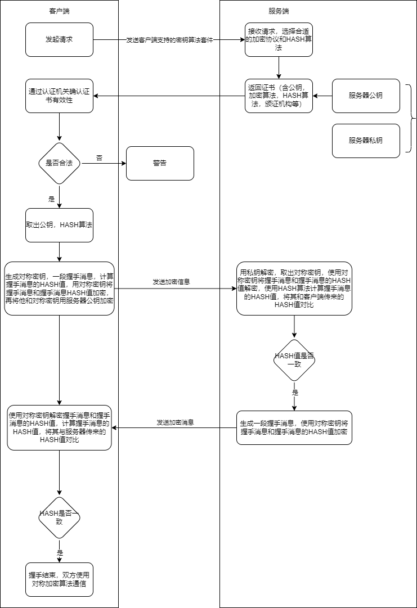

前置知识
加密分为对称加密和非对称加密，HTTPS兼顾两者。
关于非对称加密，可以查阅相关资料。这里只提一点：
公钥加密，私钥解密！
为什么需要HTTPS
HTTP 主要有这些不足：
- 通信使用明文（不加密），内容可能会被窃听；
- 不验证通信方的身份，因此有可能遭遇伪装；
- 无法证明报文的完整性，所以有可能已遭篡改；
为了解决这些问题，HTTPS顺应而生。
HTTPS介绍
HTTP+ 加密 + 认证 + 完整性保护=HTTPS。
可以这么理解，HTTPS是安全版的HTTP，它不是一个新的协议，而是HTTP 加上加密处理（解决HTTP通信使用明文的问题）和认证（解决HTTP不验证通信方的身份问题）以及完整性保护（解决HTTP无法证明报文完整性的问题）后的东西。
端口：443

注：上图并不代表顺序。也就是说HTTPS是先建立TCP连接，再进行TLS/SSL握手。
HTTPS通信
直接上图

上图基本把HTTPS的通信流程说的非常清晰了，补充两点：
- 这里对比HASH是为了防止握手消息被篡改。浏览器与网站互相发送加密的握手消息并验证，目的是为了保证双方都获得了一致的密码，并且可以正常的加密解密数据，为后续真正数据的传输做一次测试。
- 因为对称加密要比非对称加密的计算快很多，所以HTTPS没有全程使用非对称加密，而是先使用非对称加密交换对称密钥，再使用对称加密手段通信。
- 证书确保了双方身份。
另外，HTTPS一般使用的加密与HASH算法如下：
- 非对称加密算法：RSA，DSA/DSS
- 对称加密算法：AES，RC4，3DES
- HASH算法：MD5，SHA1，SHA256
HTTPS 的优缺点?
优点
安全性：
- 使用HTTPS协议可认证用户和服务器，确保数据发送到正确的客户机和服务器；
- HTTPS协议是由SSL+HTTP协议构建的可进行加密传输、身份认证的网络协议，要比http协议安全，可防止数据在传输过程中不被窃取、改变，确保数据的完整性。
- HTTPS是现行架构下最安全的解决方案，虽然不是绝对安全，但它大幅增加了中间人攻击的成本。
- SEO方面：谷歌曾在2014年8月份调整搜索引擎算法，并称“比起同等HTTP网站，采用HTTPS加密的网站在搜索结果中的排名将会更高”。
缺点
- 在相同网络环境中，HTTPS 相比 HTTP 无论是响应时间还是耗电量都有大幅度上升。
- HTTPS 的安全是有范围的，在黑客攻击、服务器劫持等情况下几乎起不到作用。
- 在现有的证书机制下，中间人攻击依然有可能发生。
- HTTPS 需要更多的服务器资源，也会导致成本的升高。